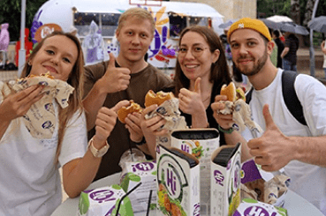
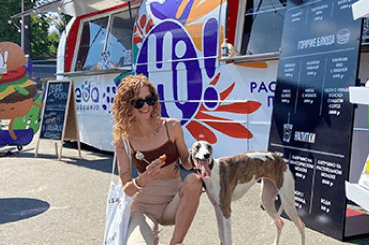

МИССИЯ И СТРАТЕГИЯ
Развитие бизнеса и деловой культуры через совершенствование
собственного научно-технологического и кадрового потенциала
Лидерство в сегменте производства жиров специального назначения и маргариновой продукции.
Усиление лидирующих позиций в данном сегменте за счет разработки новых, более совершенных видов
жиров и повышения степени лояльности клиентов, в том числе благодаря расширению спектра
оказываемых услуг.
Ведущие позиции в России по объему продаж майонеза. Увеличение степени влияния на данном рынке с
помощью запуска новых продуктов, в том числе удовлетворяющих потребности покупателей в
правильном питании, и проведения широких маркетинговых кампаний.
Расширение географии сбыта. Продолжение вывода продукции Компании на новые перспективные рынки,
в частности на рынки стран СНГ.
Модернизация производственных мощностей и оптимизация затрат. Обновление имеющихся и
строительство новых производственных объектов для увеличения выпуска и ассортимента продукции и
улучшения операционной эффективности производства.
ИСТОРИЯ
История развития компании
Приватизация комбината по производству
парфюмерно-косметических изделий, синтетических душистых веществ и эфирных масел в г.
Алексеевка - основание Группы “ЭФКО”
1992 год
1994 год
Новая команда во главе с Председателем Совета директоров
Валерием Кустовым модернизирует предприятие и запускает производство подсолнечного масла
“ЭФКО” выпускает первое в России брендированное
подсолнечное масло “СЛОБОДА”
1996 год
1999 год
Запуск в производство первого в России майонеза “Слобода”
с оливоквым маслом
Начало производства жиров
специального назначения для
пищевой промышленности на
новом заводе 000 «ЭФКО
Пищевые Ингредиенты»
2002 год
2005 год
Начало парнерства
C американской
компанией Bunge
Сертификация производства жиров
специального назначения по требо-
ваниям Пищевого стандарта
Британского розничного консорциума
(BRC) и International Food Standard
(IFS).
2006 год
2007 год
Открытие производства майонеза В Екатерибурге.
Начато производство майонезов TM «Пик-Ник»,
«Пир Горой», EFKO FOOD professional для сегмента HoReCa.
Открытие производства майонеза В Екатерибурге.
Начато производство майонезов TM «Пик-Ник»,
«Пир Горой», EFKO FOOD professional для сегмента HoReCa.
2008 год
2011 год
Обратный выкуп акций
предприятий Группы y
компании Bunge в рамках
завершения партнерского
проекта.
Начало эксплуатации завода
по переработке сои В Алексеевке
Начало производства кетчупа
под брендом "Слобода"
Начало эксплуатации завода
ПО переработке сои В Алексеевке
Начало производства кетчупа
под брендом "Слобода"
2012 год
2013 год
Запуск производства
мыловаренной продукции.
Инновационный центр «Бирюч».
Выход на рынок туалетного мыла
2014 год
2015 год
Выход на рынок йогуртов C TM «Слобода»
Запуск маслоэкстракционного завода
и производства пищевых ингредиентов
В Г. Алматы (Республика Казахстан)
Расширение линейки молочной продукции TM «Слобода»
Расширение линейки мыловаренной продукции
Создание уникального масложирового кластера
2016 год
2017 год
Создание селекционно-
семеноводческого центра
Начало производства молока A2
под брендом «Слобода»
ПОСЛЕДНИЕ НОВОСТИ

ТРИ ГОРОДА. ЧЕТЫРЕ ТЫСЯЧИ УЧАСТНИКОВ. ОДИН HIBURGER TOUR
Итоги «зеленого» летнего путешествия Healthy Innovation 2022
Август 9, 2022
Все новости

ТРИ ГОРОДА. ЧЕТЫРЕ ТЫСЯЧИ УЧАСТНИКОВ. ОДИН HIBURGER TOUR
Итоги «зеленого» летнего путешествия Healthy Innovation 2022
Август 9, 2022
Все новости

ТРИ ГОРОДА. ЧЕТЫРЕ ТЫСЯЧИ УЧАСТНИКОВ. ОДИН HIBURGER TOUR
Итоги «зеленого» летнего путешествия Healthy Innovation 2022
Август 9, 2022
Все новости